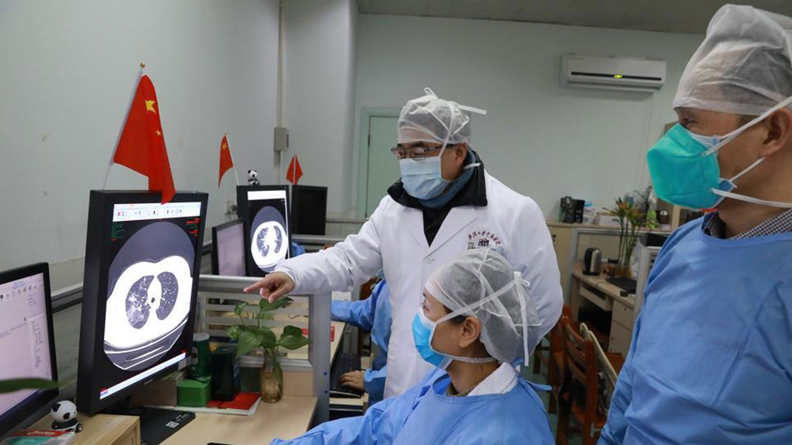
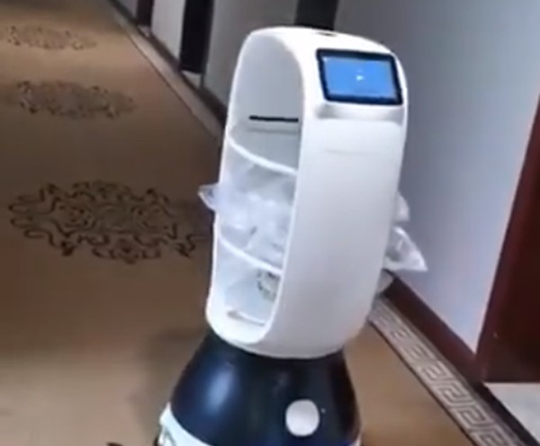
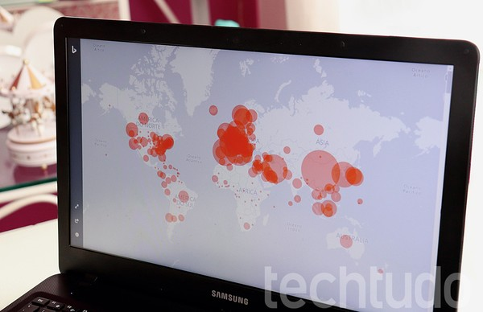

Beber água quente ou chá mata o vírus
Vitamina C pode ajudar a prevenir o coronavírus
Cuba anuncia vacina contra coronavírus
Médicos tailandeses curam paciente com coronavírus em 48 horas
Produtos de origem chinesa podem estar infectados
Lança-perfume, o popular “loló”, pode curar uma infecção
Beber água de 15 em 15 minutos cura o coronavírus
Rússia anuncia cura para coronavírus
Tomar banho quente pode prevenir contra a Covid-19
Diversas tecnologias estão sendo utilizadas mundo afora para combater a pandemia da Covid-19,
causada pelo novo coronavírus. Algumas delas ainda são novas e restritas a determinados países,
mas estão em fase acelerada de testes e se mostram úteis para oferecer serviços em situação de
isolamento.
Confira a seguir técnologias que estão sendo adotadas para combater o novo coronavírus.
Detecção do vírus
A Alibaba, gigante chinesa do setor de e-commerce e tecnologia,
desenvolveu uma inteligência artificial que pode detectar a infecção do coronavírus
em apenas 20 segundos por meio análises de tomografias computadorizadas do peito de pacientes.
Com precisão de 96%, o sistema foi treinado a partir de imagens e dados de cinco mil casos confirmados
e testados em hospitais de toda a China.

Drones pedindo à população para ficar em casa
Em alguns países da Europa e da Ásia, governos vêm usando drones para acelerar providências
contra o coronavírus em espaços públicos. Na Espanha, onde vigora um decreto de estado de
emergência que ordena o isolamento por 15 dias, a polícia usa os equipamentos para sobrevoar
áreas onde pessoas ainda circulam e emitir um aviso sonoro para que todos fiquem em casa.
Os drones ajudam especialmente na capital Madrid, cidade mais populosa e foco de infecção no país.
Diferentes tipos de robôs
Foco do surto inicial do coronavírus, a China precisou da ajuda de robôs para evitar o
contato entre as pessoas, especialmente entre pacientes e equipes de médicos e enfermeiros.
Em um hotel onde mais de 200 pessoas ficaram isoladas em Hangzhou, no leste do país,
um robô circulava pelos corredores para entregar comida na porta dos quartos.
Outra solução que visa reduzir interações face a face corresponde aos robôs da Pudu Technology.
Desenvolvidas para atender restaurantes, as máquinas foram adaptadas para distribuir refeições em pelo menos
40 hospitais na China.
Enquanto isso, robôs da Blue Ocean Robotics usam raios ultravioletas para esterilizar ambientes de unidades
de saúde.
A empresa chinesa CloudMinds desenvolveu um conjunto de 12 robôs para cuidar de pacientes em quarentena com
sintomas do novo coronavírus.
Os andróides equipados com 5G, a última geração de internet móvel, medem a temperatura dos pacientes,
entregam refeições,
desinfetam as instalações e permitem que os médicos leiam os registros dos pacientes remotamente
Na Bélgica, a empresa de tecnologia Zorabots emprestou centenas de robôs de companhia para idosos em
isolamento.
A ideia é que, mesmo em casa durante a quarentena, as pessoas possam conversar com a família e os amigos por
meio de videochamadas.
As máquinas respondem a comandos de voz e podem acompanhar fisicamente o usuário pela casa, ajudando a
melhorar a sensação de companhia.

Mapa do coronavírus no mundo: sites mostram casos confirmados em tempo real

“Doação” de processamento de placas de vídeo
A Nvidia, conhecida fabricante de placas de vídeo, está convocando usuários a doarem o poder de
processamento
de suas GPUs para ajudar no combate ao coronavírus. Por meio do aplicativo Folding@home, qualquer usuário
que tenha um
PC equipado com uma placa GeForce pode contribuir. O sistema funciona como uma rede descentralizada de
processamento de dados
ligada a centros de pesquisa que desenvolvem estudos relacionados à pandemia.
O desenvolvimento de modelos de proliferação da Covid-19, por exemplo, é baseado em cálculos complexos que
precisam do maior volume
possível de processamento. Ao doar parte do trabalho do computador – e, consequentemente, energia elétrica –
um PC gamer pode ajudar
a processar um pequeno pacote de informações que ajuda a reduzir o tempo necessário para encontrar uma
solução para a situação
Impressão 3D para peças em hospital
Em Brescia, na Itália, um hospital não podia atender a demanda de 250 pacientes na UTI precisando de
respiração artificial.
Além da falta de respiradores, o problema estava no estoque limitado para a reposição de uma válvula que só
dura oito horas
contínuas de operação. Sem substituição frequente desse componente, os aparelhos não podiam ficar ligados
por muito tempo.
Foi quando o hospital teve auxílio da comunidade de entusiastas da impressão 3D. Em três horas,
já havia um modelo da peça e um protótipo pronto que os técnicos podiam testar nos respiradores.
Em pouco tempo, o hospital tinha à disposição mais de 100 válvulas para usar, por um custo final de menos de
1 euro por unidade,
provando que a tecnologia pode ajudar em meio à superlotação de leitos hospitalares e o desgaste acelerado
de equipamentos.
Robôs substituem estudantes em cerimônia de graduação no Japão
Robôs de telepresença do tipo 'Newme' ajudaram estudantes japoneses a receber seus diplomas.
Escolas em todo o mundo têm sido forçadas a fechar as portas graças ao avanço do novo coronavírus, mas um
grupo de estudantes no Japão não deixou que a pandemia arruinasse sua cerimônia de graduação.
Usando robôs de telepresença chamado de “Newme”, os estudantes da Universidade Business Breakthrough (BBT),
em Tóquio, foram capazes de cruzar o salão e receber seu diploma (quase) em mãos – tudo isso, sem precisar
sair de casa,
segundo informações do jornal online Daily Mail.
Os robôs receberam as tradicionais roupas de formatura. Presos à cabeça, no lugar da face,
receberam tablets que mostraram os rostos dos graduandos. Os estudantes também puderam, à distância,
controlar os movimentos dos robôs, no que está sendo considerada a "primeira cerimônia online de graduação
do mundo."
O 'Newme' é um robô que funciona como avatar, compreendendo uma base, uma tela, câmera, microfone,
autofalantes
e sensores de impacto. Ele pode se mover dentro de um espaço e se comunicar com outro robô que esteja em
outro lugar.
Estamos todos passando por um momento chato e delicado. Junto com esse vírus, vieram varios acontecimentos
como fome, pánico, desempregos, mortes, a economia que já estava ruim piorou, entre vários outros acontecimentos.
Mas será que isso tudo não nos leva para um minuto de reflexão ? Será que não está sendo um momento
para olhar pra si mesmo?
Para o próximo ou até mesmo para o pasado? E tentarmos fazer diferente no presente, para nos dar um bom
resultado no futuro?
Quantas famílias que muitas vezes nem tinham tempo de sentar na sala pra bater um papo, reparar uns nos
outros,
e que agora estao tendo a possibilidade de passarem mais tempo juntos. Mas porque isso teve que
acontecer justo com um desastre como esse vírus?
Por que não antes? Será que temos que realmente apanhar para aprender? Será que isso não serve para
deixar de sermos mais egoistas,
ingratos ou individualistas? Será que não deveriamos ser mais gratos as coisas, pessoas ou a vida que
temos?